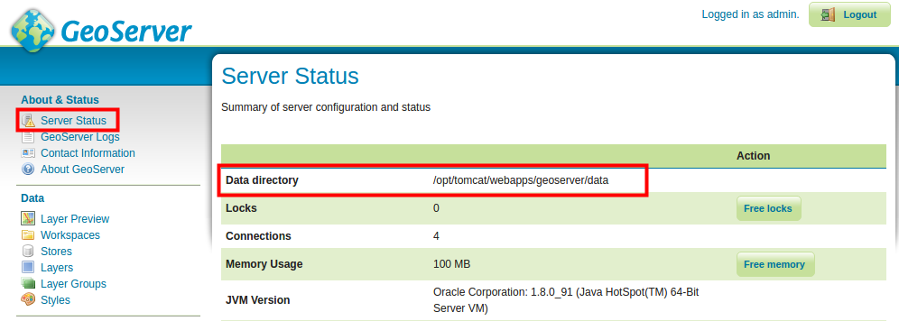
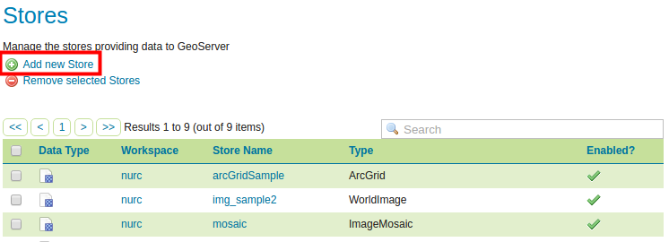
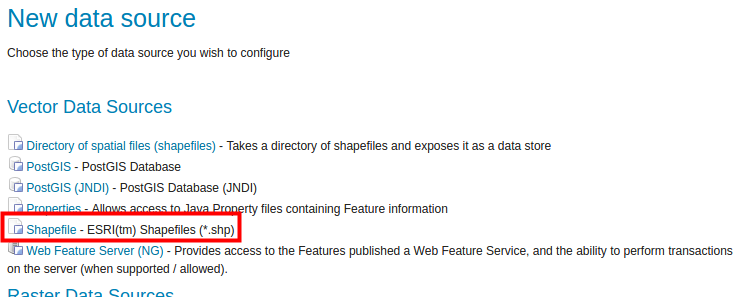
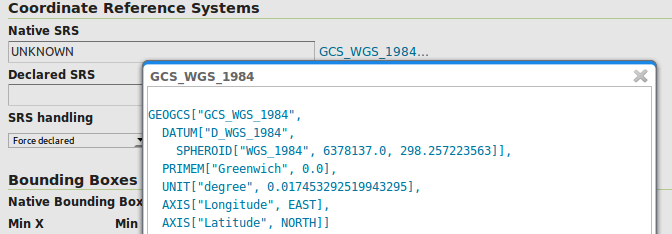
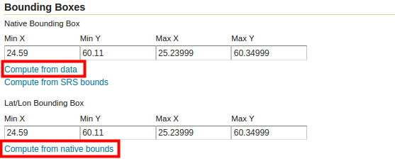
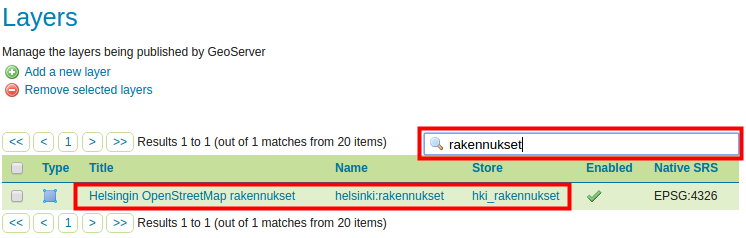
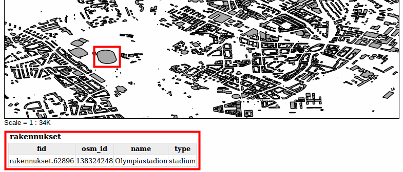
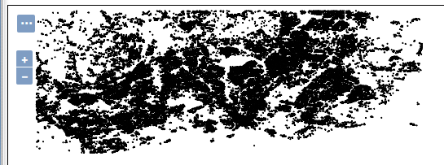

4 Harjoitus 1.3: VEKTORIAINEISTOT
Harjoituksen sisältö
Harjoituksessa lisätään vektoriaineistoja GeoServer-palvelimelle ja muokataan tason asetukset WFS-palvelun julkaisemista varten.
Harjoituksen tavoite
Harjoituksen jälkeen opiskelija osaa lisätä vektoriaineistoja ja tehdä välttämättömät asetukset aineiston julkaisemiseksi.
Arvioitu kesto
40 minuuttia.
4.1 Valmistautuminen
Kaikki koulutusaineistot ovat valmiiksi GeoServerin aineistohakemisto /data/koulutus/-kansiossa. Voit tarkistaa sen sijainnin omassa palvelimessasi Server Status -näkymästä. Sijainti on Data directory -kentässä; uusia aineistoja voidaan tarvittaessa lisätä siihen.
Harjoituksessa käytettävät aineistot on ladattu käytössä oleville palvelimille.

GeoServerin aineistohakemistossa on paikkatiedon lisäksi muita aineistoja, kuten karttatyylejä ja tasoryhmien määrittelyjä. Tarkemmin, kurssin paikkatietoaineistot ovat koulutuskoneen kansiossa:
/var/lib/tomcat8/webapps/geoserver/data/koulutus/
Psst! Aineistojen lisäämisen yhteydessä ilmenevät virheilmoitukset liittyvät usein tiedostojen ja hakemistojen käyttöoikeuksiin.
Varmista, että koulutuskansio ja kaikki sen sisältämät alikansiot ja tiedostot ovat tomcat8-käyttäjän omistamia suorittamalla komentorivillä seuraava komento:
sudo chown -R tomcat8:tomcat8 /var/lib/tomcat8/webapps/geoserver/data/koulutus
Koulutuskoneen salasana on gispo.
4.2 Vektoriaineisto Storen luominen
Koulutuksen aineistosta löytyy muun muassa OpenStreetMapsin rakennukset Helsingistä shapefile-formaatissa buildings.shp, joka lisätään nyt GeoServeriin.
Aineiston formaatin ollen shapefile täytyy sille luoda store, joka on shapefile-formaatin kanssa yhteensopiva.
Päävalikosta valitse Stores ja paina sitten Add new Store.
Valitse Shapefile aineiston formaatiksi New data source -näkymässä, Vector Data Sources -kohdan alta.


Seuraavassa näkymässä pääset määrittelemään juuri luomasi store:n muut asetukset, kuten nimen ja tiedoston sijainnit. Nimeä ne seuraavalla tavalla:
Valitse workspaceksi helsinki
Nimeä aineisto hki_rakennukset
Lisää halutessasi aineistolle kuvaus, esimerkiksi “Helsingin OpenStreetMaps rakennukset”
Seuraavaksi määritellään mihin aineistoon (shape-tiedostoon) viitataan tämän store:n kautta. Muokkaa Connection Parameters:
- Paina Browse…, ja selaa tiedostoon: /koulutus/Helsinki.osm.shp/buildings.shp
Pidä Enabled ruksattuna ja varmista näin tekemäsi store:n (ja siitä luotujen tasojen) käytettävyys GeoServer-palvelimelta. Tätä valintaa voidaan käyttää halutessa piilottaa joitakin aineistoja käyttäjiltä ilman niiden poistamista palvelimelta (ylläpitäjät voivat vielä käyttää niitä).
Tarkista vielä, että DBF charset arvo on UTF-8.
Loput asetukset voidaan pitää oletusarvoina.
Paina Save, niin store tallentuu GeoServerille ja on jatkossa käytettävissä
Storen luomisen jälkeen GeoServer olettaa, että halutaan julkaista uusi taso ja siksi uusi taso -näkymä (New Layer) aukeaa automaattisesti.


Paina Publish tason julkaisemiseksi.
4.3 Vektoritason julkaiseminen
Luodaan ja julkaistaan nyt uusi taso. Jos et vielä tehnyt niin, paina Publish niin pääset muuttamaan julkaistavan tason ominaisuuksia.
Psst! Jos ehdit poistumaan edellisestä näkymästä, samaan uuden tason luonti -näkymään pääsee päävalikosta Layers > Add a new layer ja valitsemalla haluttu store (meidän tapauksessa helsinki:hki_rakennukset).
Tason julkistamisen ominaisuudet ovat jaettu neljään välilehteen:
Data
Publishing
Dimensions
Tile Caching
4.4 Data asetukset
Keskitytään nyt Data-välilehdessä oleviin valintoihin. Määrittele yleistiedot seuraavasti:
Pidä Enabled ja Advertised rastitettuna
Nimeä aineisto rakennukset
Otsikoi Helsingin OpenStreetMap rakennukset
Lisää halutessasi selitystä tasosta ja tasoon liittyviä avainsanoja (keywords). Avainsanojen avulla sekä Geoserverin ylläpitäjien ja käyttäjien on helpompi löytää heille tarpeellisia paikkatietoaineistoja.
4.4.1 Coordinate Reference Systems
Selaa alaspäin kunnes löydät Coordinate Reference Systems -kohdan. Tässä määritellään tasolle koordinaattijärjestelmä.
Kun uutta aineistoa tuodaan GeoServeriin, se yrittää tunnistaa alkuperäisen koordinaattijärjestelmän EPSG-koodin. Jos tunnistus ei onnistu, niin Native SRS -kentän arvoksi tulee UNKNOWN ja sen oikealta puolelta löytyy linkki, josta saa tiedot aineiston alkuperäisen koordinaattijärjestelmän selvittämistä varten.
Tässä tapauksessa, projektiotiedot tulevat shapefilen aineiston .prj-tiedostosta. Paina GCS_WGS_1984… -linkkiä, niin saat auki projektiotiedot.

Psst! Huomaa, että Native SRS tiedot ovat tarkoitettu vaan esikatselua varten. Tiedot tulevat suoraan alkuperäisen aineiston asetuksista, esimerkiksi shapefilen tai PostGIS-tason koordinaattijärjestelmätiedoista. Siksi niitä ei voida muokata GeoServerin selaimessa käyttöliittymän kautta.
Kirjoita EPSG:4326 koodi Declared SRS -kohdassa. Voit myös etsiä EPSG-koodeja Find -toiminnolla.
Pidä SRS handling oletusarvo (Force declared) ennallaan.

4.4.2 Bounding Boxes
Täytä alla Bounding Boxes -kohdassa tiedot aineiston laajuudesta.
Psst! Laajuus olisi mahdollista määritellä automaattisesti, mutta GeoServer vaatii, että tämä asetus tehdään valvotusti. Syy on se, että suurien aineistojen kanssa palvelin voisi jäädä pitkäksi ajaksi laskemaan tasojen laajuutta. Pyyntö voisi jopa epäonnistua, jos palvelimen timeout-asetus ylittyisi ja näin aineiston lisääminen olisi hankala.
Harjoituksen aineisto on sen verran pieni, että voimme käyttää automaattista määrittelyä. Paina ensin Native Bounding Box → Compute from data ja sitten Lat/Lon Bounding Box → Compute from native bounds.

4.4.3 Feature Type Details
Data-näkymän loppuosasta löytyy Feature Type Details, josta nähdään vektoriaineiston ominaisuustiedot ja niiden tyypit.
Muita julkaisun ominaisuuksia katsotaan vielä myöhemmin. Paina nyt Save, ja aineisto on saatavilla GeoServeristä. Tarkista, että uusi taso rakennukset on tasojen listalla.
Psst! Voit käyttää “etsi”-toimintoa kun haluat suodattaa näkymää.
Avaa nyt Layer Preview -näkymä, jolla pääset esikatselemaan rakennukset-tasoa samalla tavalla kun aiemmin olet esikatselut muita demoaineistoja.

Psst! Huomaa, että Layer Preview näkymässä (ja myös Layer näkymässä) tason nimen edessä on laitettu workspacen nimi. Helsingin rakennukset -tason nimi on siksi helsinki:rakennukset.
OpenLayers esikatselu näyttää tältä: 

Zoomaa karttaan ja paina jonkun rakennuksen päällä niin saat sen ominaisuustiedot näkyviin.
4.5 Helsingin tiestön lisääminen
Lisää nyt OpenStreetMap Helsingin tiestö GeoServeriin samalla tavalla kuin edellisessä harjoituksessa. Aineisto löytyy samasta kansiosta kuin rakennukset-aineisto, nimellä roads.shp.
Muista, että ennen kun tason voi lisätä GeoServeriin, sille täytyy luoda sopiva store. Nimeä uusi store hki_tiesto ja siitä luotu taso tiesto niin tasojen nimet pysyvät samankaltaisina. Muista korjata myös koordinaattijärjestelmä (EPSG:4326) ja DBF charset (UTF-8).